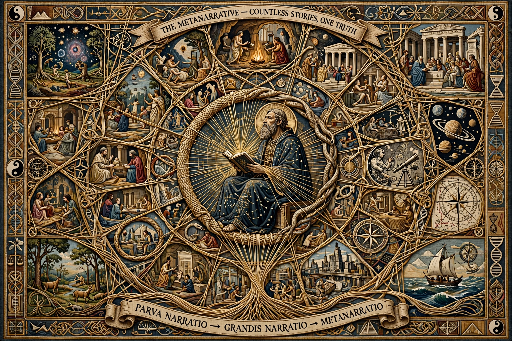

In social theory and literary theory, a metanarrative is a narrative about narratives, a global or totalising cultural narrative schema that orders and explains knowledge and experience — a grand narrative or master narrative.

Jean-François Lyotard defined postmodernism in The Postmodern Condition (1979) as incredulity toward metanarratives, such as progress, Enlightenment emancipation, Marxism, and absolute knowledge in Hegel.
Critics argue rejecting all metanarratives is self-contradictory or politically disabling; others use the term for founding myths of nations and religions.